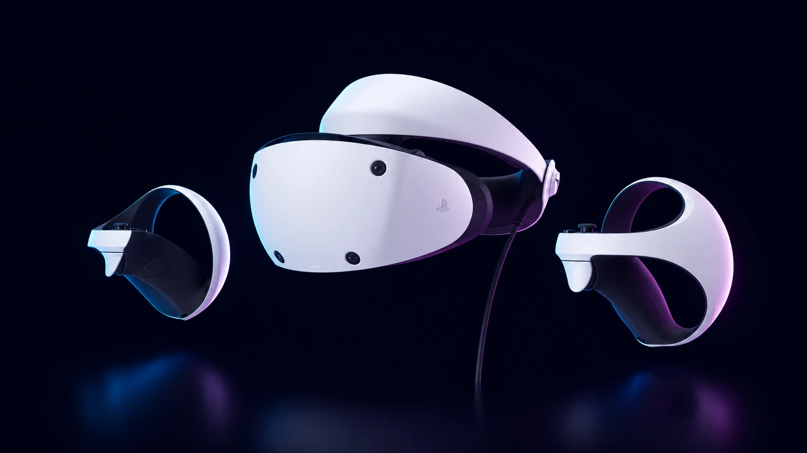

Mejor VR para PS5: la verdad que casi nadie te dice

Si tenés una PS5 y querés jugar VR en ella, hay un detalle que casi nadie te aclara de entrada: existe un solo visor que funciona. No podés enchufar una Meta Quest a una PlayStation. La PlayStation VR2 es el único visor de realidad virtual que la PS5 soporta, y se terminó la discusión. Así que "mejor VR para PS5" no es realmente una comparación: es una sola pregunta. ¿Vale la pena la PSVR2 y cuál es la trampa?
El hardware es lo fácil de elogiar. La PSVR2 usa dos pantallas OLED con HDR a 2000×2040 por ojo, lo que significa negros de verdad y un contraste que las pantallas LCD de una Quest no pueden igualar. Un pasillo oscuro en Resident Evil Village o el brillo del tablero en Gran Turismo 7 se ven realmente impresionantes. Sigue el movimiento de tus ojos, así la PS5 renderiza el detalle completo solo donde estás mirando: imagen más nítida con menos costo gráfico. Los controles Sense traen los mismos gatillos adaptativos y la vibración del DualSense, y el visor en sí también vibra. La conexión es un único cable USB-C a la consola. Para VR sentado, cinematográfico y premium, es el visor que mejor se ve que podés comprar por menos de 500 dólares.
Ahora la trampa. La PSVR2 no es una computadora: le pide todo a la PS5. El precio oficial ronda los 399 dólares y baja a unos 300 en ofertas como los Days of Play de Sony. Si ya tenés una PS5, es una ganga de verdad, posiblemente lo que mejor relación precio-experiencia ofrece hoy en VR. Si no tenés PS5, el costo real de entrada se acerca a los 900 dólares sumando la consola, y a ese precio la cuenta se inclina con fuerza hacia una Quest standalone, que no necesita nada más en la habitación.
El punto flojo, siendo honestos, es el software. La PSVR2 arrancó con una biblioteca pobre, muchos ports, y el propio soporte de Sony se apagó rápido: por un tiempo se sintió abandonada. Eso mejoró: Gran Turismo 7, Resident Evil 4 y Village, Horizon Call of the Mountain, No Man's Sky, Metro Awakening, Microsoft Flight Simulator y las versiones en Unreal Engine 5 de Myst y Riven son razones reales y de peso para tener una. Pero el catálogo sigue siendo mucho más chico que el de la Quest, y los lanzamientos llegan a cuentagotas. Compralá por los juegos que ya existen, no por la promesa de lo que viene.
Otra cosa que conviene saber: Sony sacó un adaptador para PC, así que la PSVR2 ahora puede correr juegos de SteamVR en una compu gamer. Te abre títulos como Half-Life: Alyx. Pero en PC perdés el seguimiento ocular, el HDR, la vibración del visor y los gatillos adaptativos, justo lo que la hace especial. En una PC es apenas un buen visor OLED con cable, y el adaptador es una compra aparte.
Entonces, el veredicto honesto. Si ya tenés una PS5 y querés VR premium, sentado y cinematográfico, con la mejor imagen de su rango de precio, la PSVR2 es una recomendación fácil; y de todos modos es tu única opción para jugar VR en la consola. Si no tenés PS5, o te importa más una biblioteca enorme, la libertad inalámbrica, la realidad mixta o transpirar jugando al Beat Saber sin un cable tironeándote la cabeza, una Quest standalone es la compra más inteligente. Si estás evaluando ese camino, nuestra guía Quest 3 vs Quest 3S te aclara cuál te conviene.
En resumen: para el que ya tiene PS5, la PSVR2 es la única puerta a la VR en la consola, y por suerte es una buena puerta. Para todos los demás, la pregunta de verdad no es qué VR para PS5, sino si la PS5 tiene que estar en la ecuación.
Dónde comprar
Respondé 7 preguntas rápidas y obtené una recomendación personalizada en 60 segundos.
Hacer el test de VR Finder →Esta guía contiene enlaces de afiliado. Si comprás a través de ellos podemos ganar una comisión sin costo adicional para vos, lo que ayuda a mantener vr.ar gratis. Como Afiliado de Amazon, vr.ar gana con las compras que cumplen los requisitos. Los precios y las especificaciones pueden cambiar. Consultá nuestra Política de privacidad.